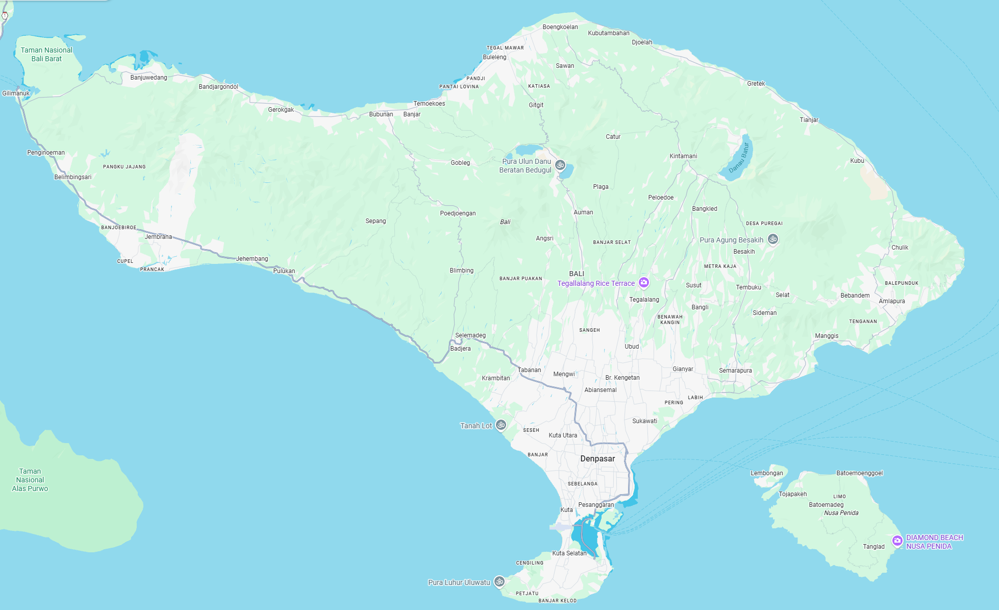
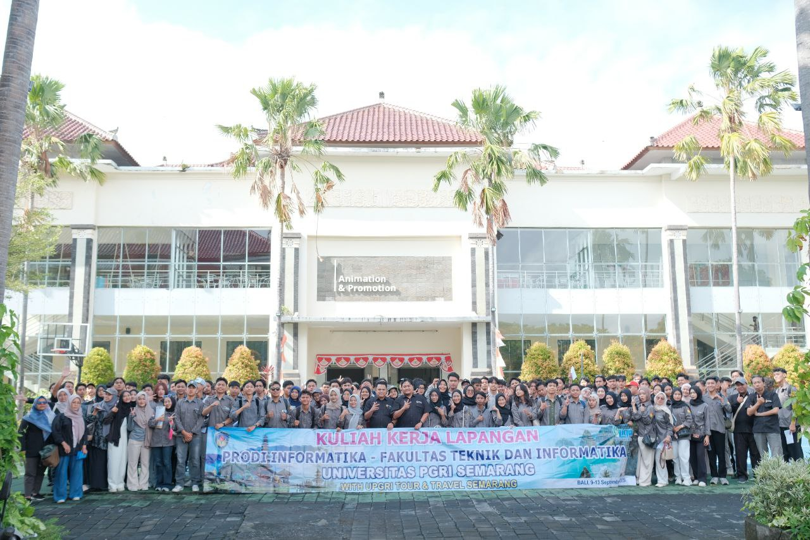

<div class="photo-container">
  
</div>

<style>
.photo-container {
  display: inline-block;
  width: 350px;       /* ukuran kotak */
  border-radius: 20px;
  box-shadow: 0 10px 20px rgba(0,0,0,0.2);
  animation: moveBox 6s infinite alternate ease-in-out;
}

.photo-container img {
  width: 100%;
  display: block;
  border-radius: 20px;
  border: 6px solid #fff; /* border putih */
  box-sizing: border-box; /* biar border nggak bikin gambar "meledak" */
}

@keyframes moveBox {
  from { transform: translateX(0); }
  to   { transform: translateX(50px); }
}
</style>

<div class="stack-container">
  <div class="photo-box box1">
    
  </div>
  <div class="photo-box box2">
    
  </div>
</div>

<style>
.stack-container {
  position: relative; 
  width: 500px;   /* sesuaikan ukuran area */
  height: 350px;  /* sesuaikan */
}

.photo-box {
  position: absolute;
  width: 300px;
  border-radius: 20px;
  box-shadow: 0 8px 20px rgba(0,0,0,0.2);
}

.photo-box img {
  width: 100%;
  border-radius: 20px;
  border: 6px solid #fff; /* border putih */
  display: block;
  box-sizing: border-box;
}

/* Foto pertama */
.box1 {
  top: 0;
  left: 0;
  z-index: 1;
}

/* Foto kedua, ditumpuk di atas agak geser */
.box2 {
  top: 80px;   /* geser ke bawah */
  left: 120px; /* geser ke kanan */
  z-index: 2;
}
</style>

